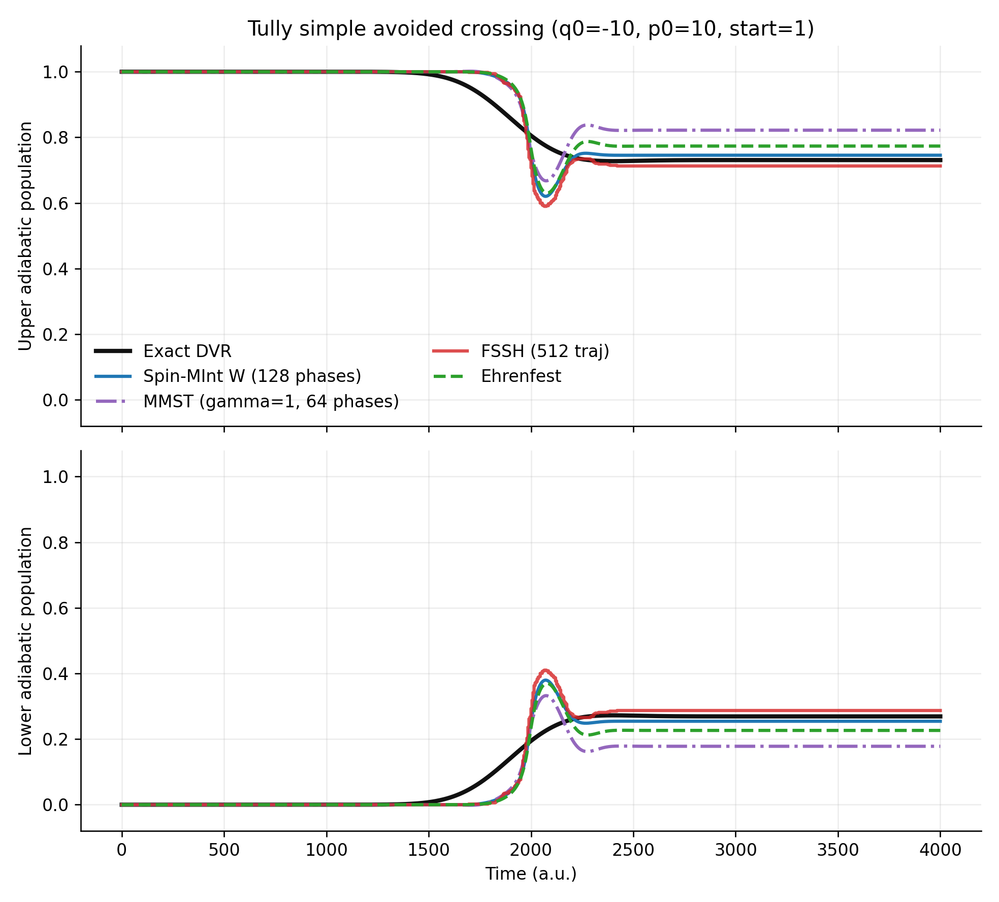
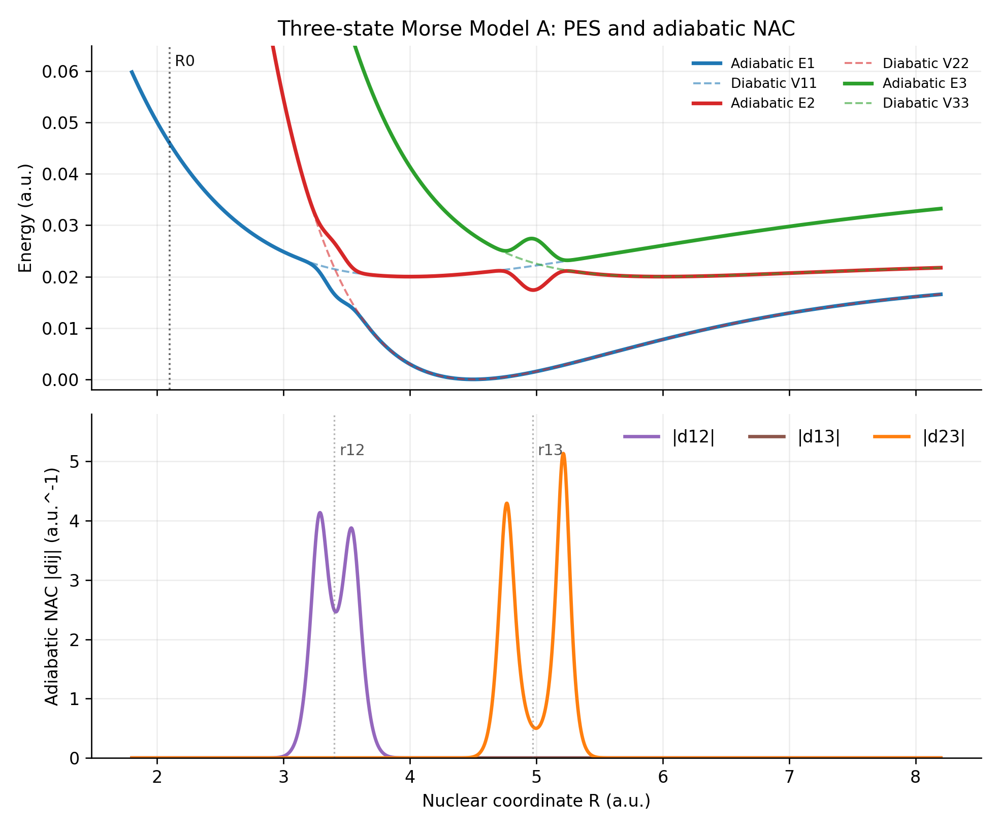
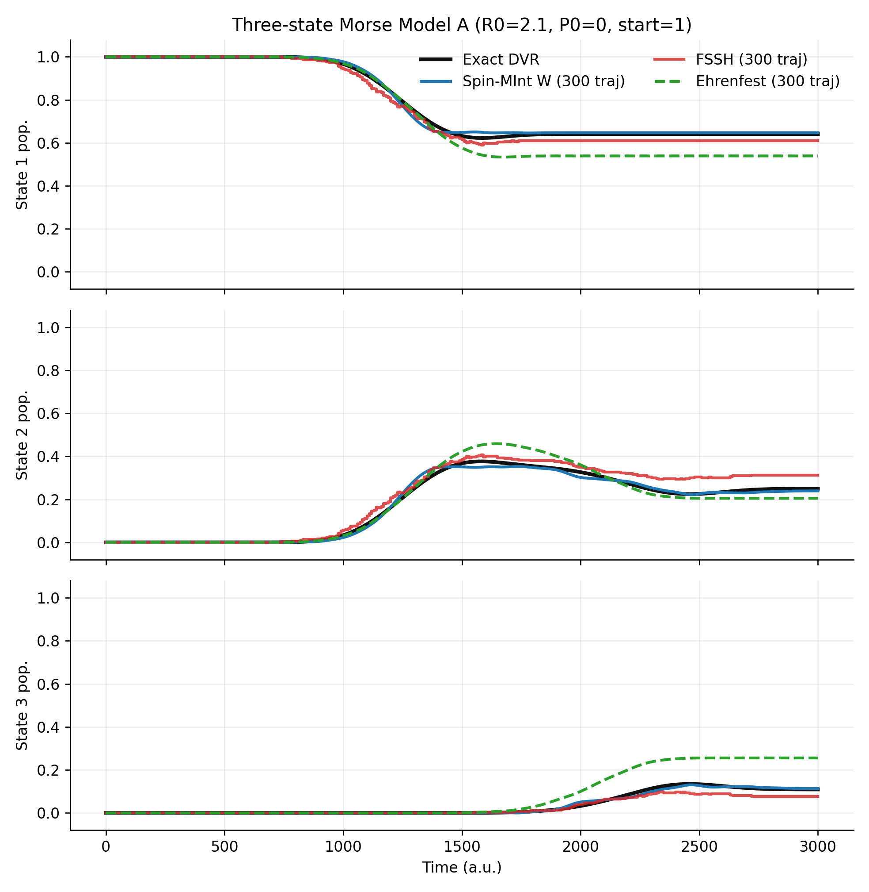

Mapping Dynamics
Spin Mapping and Spin-MInt Method
Spin mapping is best understood as a finite-state replacement for the oscillator embedding used in MMST mapping. It keeps the electronic subsystem on the geometry of an \(N\)-level Hilbert space, fixes the zero-point parameter through the Stratonovich-Weyl transform, and gives a natural route to symplectic Spin-MInt propagation. This note derives the working equations and then tests the implementation against FSSH, Ehrenfest, and exact DVR wavepacket references on both Tully's simple avoided crossing and a three-state Morse model.
This article is the method-and-benchmark continuation of Spin Mapping Mathematical Foundations, which develops the \(SU(N)\) algebra, Casimir invariant, and Stratonovich-Weyl kernels used below.
Physical Starting Point
In mixed quantum-classical nonadiabatic dynamics, the nuclear variables are usually treated as continuous phase-space coordinates \((R,P)\), while the electronic subsystem is a finite set of diabatic or adiabatic states. For an \(N\)-state diabatic model, the electronic Hamiltonian is an \(N\times N\) Hermitian matrix,
The question is how to attach classical-like continuous variables to this finite electronic space without pretending that the electronic states are ordinary nuclear coordinates. MMST and spin mapping answer this question differently.
MMST Mapping
MMST maps each electronic state \(|n\rangle\) to a singly excited harmonic oscillator state. In classical mapping variables, a common MMST Hamiltonian is
This is practical because it turns an \(N\)-state problem into canonical-looking variables. The cost is geometric. The physical electronic space is the singly-excited oscillator subspace, but the classical variables live in a larger unbounded oscillator phase space. Raw MMST actions can therefore leave the physical population interval, and the zero-point parameter \(\gamma\) becomes both a representation choice and a source of numerical sensitivity.
Spin Mapping Idea
Spin mapping starts from the symmetry of the finite electronic subsystem. Removing the irrelevant global phase, an \(N\)-state electronic pure state lives on \(\mathbb{CP}^{N-1}\), with \(2N-2\) physical real degrees of freedom. The natural algebra is \(SU(N)\), whose normalized generators \(\hat S_i\) satisfy
Any diabatic potential matrix can be decomposed into trace and traceless pieces,
The finite-state analogue of the Wigner transform is the Stratonovich-Weyl transform. In the W representation, it fixes the mapping zero-point parameter to
instead of leaving \(\gamma\) as an empirical oscillator parameter. The corresponding fixed electronic radius is
For \(N=2\), this is the Bloch-sphere limit. For \(N>2\), the \(N^2-1\) spin components are constrained coordinates of a finite electronic phase space, not independent oscillator amplitudes.
Working Variables
The implementation still uses Cartesian variables \(X_n,P_n\), but with a spin-mapping interpretation:
The electronic spin vector is reconstructed from the mapped density matrix,
Focused action-angle initialization of state \(k\) uses
with \(J_k=1\), \(J_{n\ne k}=0\), and random phases \(\theta_n\). The phase average returns the focused electronic population while each trajectory remains on the fixed spin-mapping radius.
Spin-MInt Propagation
Spin-MInt is the direct minimum-integrator form of spin mapping. After decomposing the diabatic potential into trace and \(SU(N)\) components,
the spin-mapping Hamiltonian for one classical trajectory is
This expression makes the improvement over an oscillator-coordinate implementation visible. The electronic variables are the \(SU(N)\) spin components \(\Omega_i\), and the electronic force is obtained from \(\partial_R V_i\) on the same algebraic basis. No electronic population windowing or ad hoc zero-point correction is introduced inside the propagation step.
At a fixed nuclear midpoint, the electronic equation is a linear adjoint \(SU(N)\) flow,
The matrix \(A\) is real and antisymmetric for a Hermitian potential, so the exact matrix exponential conserves the spin radius and the quadratic Casimir of the mapped electronic state. The nuclear equations are
The actual one-step update is a symmetric midpoint split. First drift the nuclear coordinate by half a step, \(R_{n+1/2}=R_n+\Delta t\,P_n/(2M)\). Then evaluate \(V\) and \(\partial_R V\) at \(R_{n+1/2}\), build \(A\), and propagate the spin exactly,
The momentum kick uses the time-integrated spin force rather than a frozen endpoint estimate,
Finally, drift again, \(R_{n+1}=R_{n+1/2}+\Delta t\,P_{n+1}/(2M)\). In the implementation, \(I_\Omega\) and \(e^{A\Delta t}\Omega_n\) are obtained from one augmented matrix exponential, so the spin update and the integrated electronic force are consistent. This is why the propagator is useful for generalized \(SU(N)\) mapping: it avoids adiabatic-basis derivative-coupling propagation during the Spin-MInt step, but still captures the multi-state electronic torque through the diabatic matrix commutator.
Method Family
| Method | Role in the implementation | Geometry |
|---|---|---|
SpinMappingBase |
Shared SU(N) basis, Stratonovich-Weyl parameters, mapping initialization, density reconstruction, and estimators. | General \(SU(N)\) |
GeneralizedSpinMapping |
Runeson-Richardson style spin mapping in Cartesian mapping variables. | General \(SU(N)\) |
SpinMInt |
Direct adjoint-flow Spin-MInt propagation for one-dimensional diabatic models. | General \(SU(N)\) |
MASH |
Two-state mapping approach to surface hopping implemented as a spin-mapping child method. | \(SU(2)\) |
Tully SAC Benchmark
The benchmark below uses Tully's simple avoided crossing with \(q_0=-10\), \(p_0=10\), \(M=2000\), and the initial upper adiabatic state. Spin-MInt is propagated in the diabatic basis and its density matrix is projected to the instantaneous adiabatic basis for comparison. FSSH uses 512 trajectories. MMST uses 64 focused phase samples with \(\gamma=1\). Spin-MInt uses 128 W-representation phase samples. DVR is a finite-grid wavepacket reference.

The figure is not meant to declare a universal ranking from one model. It shows the intended diagnostic behavior: the spin-mapping implementation can be put on the same toy-model footing as standard MQC methods, and in this case the W-representation Spin-MInt curve stays closer to the DVR reference than the \(\gamma=1\) MMST curve.
Three-State Morse Benchmark
A two-state avoided crossing is a useful sanity check, but generalized spin mapping should also be tested where \(N>2\). The next benchmark uses the three-state Morse Model A. The exact reference is finite-grid DVR wavepacket propagation. Spin-MInt, FSSH, and Ehrenfest are run from Wigner-sampled classical initial conditions corresponding to the same initial Gaussian packet, with \(R_0=2.1\), \(P_0=0\), \(M=20000\), \(\omega=0.005\), \(\Delta t=10\), and 300 trajectories for each MQC method.

The double shoulders are a property of this model, not a phase-fixing artifact. For a local two-state block with diabatic gap \(\Delta(R)=V_1(R)-V_2(R)\) and coupling \(C(R)\), the adiabatic derivative coupling is proportional to the derivative of the mixing angle,
A textbook simple avoided crossing often assumes \(C'(R)=0\), which gives one central peak near the minimum gap. The three-state Morse model instead uses localized Gaussian couplings \(C(R)=A\exp[-\alpha(R-r_c)^2]\), so \(C'(R)\) changes sign on the two sides of the coupling center. Together with the changing Morse gap, the \(\Delta C'\) term enhances two shoulders around one avoided region. In the first coupling region, the signed \(d_{12}\) remains smooth and has maxima near \(R\approx3.29\) and \(R\approx3.54\), while the diabatic gap crossing is near \(R\approx3.41\).

This multi-state test is a sharper check of the generalized \(SU(N)\) machinery. Spin-MInt tracks the DVR reference closely across all three populations. FSSH is reasonable for states 1 and 2 but underestimates the final state-3 population in this run, while Ehrenfest overpopulates state 3 and underpopulates state 1, consistent with the usual mean-field tendency to keep too much averaged electronic character.
Implementation Checks
The code was checked in three layers. First, SU(N) helper tests verify generator normalization, density reconstruction, and W-representation parameters. Second, a two-state Spin-MInt diagnostic checks spin-norm conservation and timestep-dependent energy drift. Third, the SAC and three-state Morse comparisons above place Spin-MInt next to FSSH, Ehrenfest, and DVR on the same model observables, with MMST included as an additional oscillator-mapping reference for the two-state SAC case.
pytest tests/limits/test_spin_mapping_limits.py tests/limits/test_mmst_limits.py tests/test_rp_mash.py -q
14 passed in 0.75sCode and Data
- spin_mapping_sac_comparison.py generates the Spin-MInt/MMST/FSSH/Ehrenfest/DVR comparison figure and CSV files.
- spin-mapping-sac-comparison.csv stores the time-dependent populations used in the benchmark figure.
- spin-mapping-sac-comparison-summary.csv stores final populations and errors relative to DVR.
- three_state_morse_pes_nac.py generates the three-state Morse PES/NAC diagnostic figure and data table.
- three-state-morse-pes-nac.csv stores the adiabatic surfaces, diabatic matrix elements, and adiabatic derivative couplings.
- three_state_morse_method_comparison.py generates the three-state Morse exact/FSSH/Ehrenfest/Spin-MInt comparison.
- three-state-morse-method-comparison.csv stores the three-state Morse population time series.
- three-state-morse-method-comparison-summary.csv stores final populations and RMS errors for the three-state Morse benchmark.
- reproduce_spin_mint_three_state_morse.py is a secondary non-RPMD three-state Morse reproduction driver used as an implementation check, not as the main argument of this note.
- su_n_spin_mapping_checks.py verifies SU(N) algebra identities and W-representation parameters.
References
- H. D. Meyer and W. H. Miller, "A classical analog for electronic degrees of freedom in nonadiabatic collision processes," Journal of Chemical Physics 70, 3214 (1979).
- G. Stock and M. Thoss, "Semiclassical description of nonadiabatic quantum dynamics," Physical Review Letters 78, 578 (1997).
- J. E. Runeson and J. O. Richardson, "Spin-mapping approach for nonadiabatic molecular dynamics," Journal of Chemical Physics 151, 044119 (2019).
- J. E. Runeson and J. O. Richardson, "Generalized spin mapping for quantum-classical dynamics," Journal of Chemical Physics 152, 084110 (2020).
- L. E. Cook, J. R. Rampton, and T. J. H. Hele, "The Spin-MInt algorithm: An accurate and symplectic propagator for the spin-mapping representation of nonadiabatic dynamics," Journal of Chemical Physics 164, 144112 (2026).